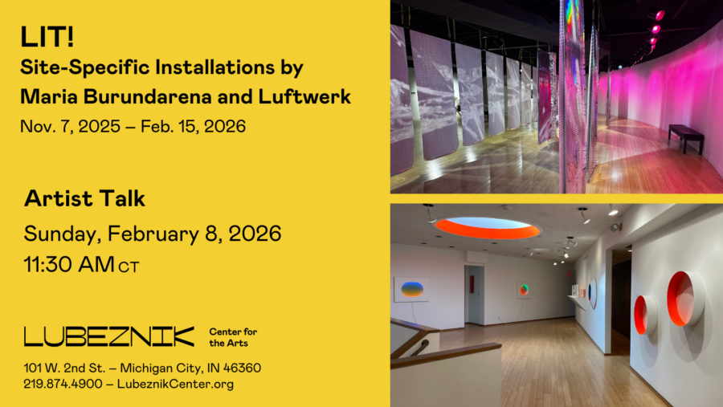

“LIT!” Artists Gallery Talk
Join us at Lubeznik Center for the Arts for a free Gallery Talk with the exhibiting artists of “LIT! Site-Specific Installations by Maria Burundarena and Luftwerk.” Hear directly from the artists about their artwork, inspirations and processes. You can ask questions and join in on the lively discussion.